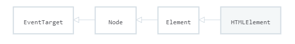
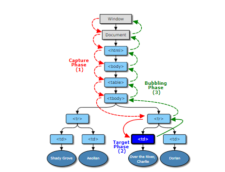

DOM stands for Document Object Model. It is a tree structure that captures the content and properties of the html and all the relationships between nodes. More specifically, the html is received by the browser, it is then converted to tokens(tokenization) which are then converted to Nodes, which is finally converted to the DOM. Another way to look at the DOM is as a model(representaiton) of the relationship and attributes of the HTML documents. If you type document inside javascript, it return #document. It is a representation of the html document, not the javascript document. Javascript works with html; therefore, the document object is expected to exist and be accessible by the javascript code under the (document) object. For more on DOM, go here.
Recall that we stated earlier that document can be entered inside javascript which returns #document. The documents is actually a javascript object that has key/value pairs. Some of it is data, some of it is functions (or methods) that provide some type of functinoally. The first DOM method we will be looking at is .getElementById(). This take the id as the argument and returns the element that matches the id as well as all of its children. If the Id doesn't exist, the function will return null. You can store the result of .getElementById() into a variable. Keep in mind that ID are unique, therefore, there should only ever be one ID in a html document.
When you want multiple DOM elements, you can use .getElementsByClassName() or .getElementsByTagName. Like .getElementByID(), it takes in the class name(or tag name) as the argument and return all elements with that class. Note the "s" in getElementsByClassName and getElementsByTagName, which isn't in getElementByID. One thing to note about getElementsByClassName (and ByTagName) is that what it return looks like an array, but it is actually a HTML collection.
N(Nodes)(interface) is like a blueprint(interface). It has properties(data) and methods(function) properties can be things like "color" or number of "doors". An interface(node) tells us the properties and methods that are applied to individual items. n (nodes) are the things that are built with the Nodes(interface/"blueprint"). To see all the method and properties, click here
Another way to think of a node, is that it is more specific, with its own specific properties and methods.
The Element interface is similar to the Node Interface in the sense that the Element interface is a blueprint for creating elements. One important thing to remember is that the Element Interface is the descendent of the node interface. This means that the Element Interface inherits all of the Node interface's properties and methods. That mean any (e)lements is also a (n)ode. To see all the method and properties, click here
In the end, there are several interfaces that we have yet to learn. To see
and read up on some more interfaces, look here This page has
a useful diagram that tells you which interface inherits from what. Here
is an example diagram provided by mozilla below.

Some other browsers do not support certain methods you want to use in
your console. On Mozilla webpage they tell you which method are supported
by which browser. Thankfully, most browsers are aligned to support the
offical standards.
If you want to be able to select elements like you do in CSS, you can use the .querySelector() method. This looks like this document.querySelector("#header"). This will find and return an element with an ID of "header". Keep in mind; however, this method will only return one element, even if there are multiple elements. It will return the first one it finds. If you want to find an element with a specific class, you can type, for example (p.class) where p is the element you are looking for. For more on this method go here
.querySelectorAll() returns a list of all elements with the certain class or type of element. This list is known as a NodeList, not an array. It is a special type of list. If the type of element is a descendent of another class, you type it like this (".article p"), this will return all p elements that are a descendent of the class article. For more on .querySelectorAll(), go here
Because every element inherits from the Element Interface, this means that all elements can use the .innerHTML property, .textContent, and .innerText. .innerHTML allows us to get an elements (and its descendants) HTML contentand modify that content. .innerHTML is a property and it returns a string. More specifically, .innerHTML returns the HTML content of a selected element. If we just want the text content, we can use .textContent, this will set the text content of an element and its descendence and return the text content of that element. If you want to modify text content, variableName.textContent = "new text". Keep in mind that when you modify text, it can only be return as text, not code. To actually update the element, use .innerHTML, this will actually take written tags and apply the html to it. Lastly, .innerText is another way of getting/setting text content, but there is a difference. The .innerText will return the text as it appears on the page, meaning that it has style included.
Side note, if you use $0 in javascript console, to store a selected element in the elements tab into a variable.
The first new one we will look at is .createElement('tag') , this one works on documents. It creates and returns a new element. For more on .createElement(), go here
One thing to note about .createElement() is that it doesn't actually add the new element to the DOM. To add it to the DOM we need to use .appendChild(), this will add the element to the page. Keep in mind that the word append means to add something at the end of another. .appendChild() works on other elements,not the document object. It need to be placed on an existing element. It also will be added to the end of the content of the tag. One last thing, keep in mind that this method is literly moving an element from one place to another; therefore, running it twice will result in the element being moved the most recent element. For more on .appendChild(), go here
To create a text node, use the document.createTextNode method; however, using the .textContent property will provide the same result. It fact, using .textContent is actually faster.
.appendChild() is useful, but it only adds things to the end of the selected
element. For something more flexible, we can use the
.insertAdjacentHTML(). This method takes two arguments, location
of the HTML, and the text that is going to be inserted. The first argument
takes in four different locations beforebegin, afterbegin,
beforeend, and afterend.. Below is a visual diagram to help explain
these locations. For more information, check out
MDN
To remove child element, use .removeChild() method. This is the exact opposite of .appendChild(), it removes the first child. parent-element.removeChild(child-to-remove). Unlike .appendChild(), we aren't limited to where we can place this. Every element has a parent element, so if the parent element isn't clear, we can always use the .parentElement property to access it. So it would like something like (parent-element).parentElement.removeChild(child-to-remove).
Alternatively, if we want to cut all the hussle, we can use the .remove() method to remove an element. It would look like this thing-to-remove.remove()
An event is like an announcement that envokes a response. One way to view events from a page of html is using the funcion monitorEvents() in the javascript console of chrome. This function takes in an element and returns all the events that are happening on the targetted element. There are two ways to stop it, refreshing the page, or typing unmonitorEvent() into the console.
Going back to html, we stated that elements inherit from nodes, but one thing we didn't mention is that nodes inherit from something known as the EventTarget Interface. The EventTarget is "an interface implemented by objects that can receive events and listen to them. Elements, documents, and window are the most common event targets, but other objects can be event targets too. The EventTarget Interface only has three methods:
The addEventListener requires three parameters, a event target
, the type of event ot listen for, and a function
to run when an event occurs known as a listener. The
structure looks like this :
<event-target>.addEventListener(<event-to-listen-for>,
<function-to-run-when-an-event-happens>);.
The event target can be anything on the web. The event-to-listen-for(type)
is the event we want to respond to. The
function-to-run-when-an-event-happens(listner) is the function to run when
event occurs. For more info go
here
To add javascript to your own file, add the element <script src = "" > </script> To view all DOM events, go here
One thing to keep in mine when using the .removeEventListener() method is that it requires you to pass the exact same listener function that you passed to .addEventLIstener. The function can't be defined inside the method, it must be defined outside.
The DevTools has an event listner tab, which tell you if there's a event listener for a specific element. You can also check to see if any of the ancesters of the element has a listener.
During the lifecyle of an event, there are three phases: capture,
at target and bubbling. Most event handlers run during the target
phase(like clicking a button.) If you have multiple items and want to have
a handler cover every item, by default, if the child item doesn't interpret
the event, the event will "bubble" to the parent until something "handles"
it or it hit the document. Capturing allowes parent function to intercept
an event befrore it reaches a child. Below is a helpful diagram to help
understand this concept.

The .addEventListener actually has three arguments, the third is known as useCapture. By default, when .addEventListener only has two arguments, it uses the bubbling phase. To review, the .addEventListner take three arguments, ("event", function(){}, and useCapture(true or false)). If .addEventListner only has two arguments(or the third argument is set to false), it will run the listener from bottom till top(during bubbling phase); however, if the third arugment is given to .addEventListener, it will run any listeners with the useCapture during the capture phase.
If you add a parameter to the .addEventListener function, it will store the event data to that set parameter. For example, document.addEventListner('click', function(event){console.log(event);}) will log the event data to use in the variable event. Since this event was a click, the variable event will return a MouseEvent. One of big reason most web developers use the event object, is to prevent the default action. This allows us to control what occurs, rather than being stuck with a default. To prevent the default use the .preventDefault() menthod on the stored event data.If you want to know more about the event data, go to Mozilla
Sometimes, in an effort to make your code more efficient, you "lose" the
ability to access specific items in code, but there is a way aroudn this!
It's known as event delegation. In reality, event object
has a .target property which allows us to directly
access the element it is attached to. Here is a example provided by Udacity:
Because we have access to the element, we can access its
.textContent, which gives us control of the element and
its text. We can change almost anything with this.
Somtimes, you'll want to listen to a parent element with multiple child elements, with what we know now, it is not possible to distinguish between the two elements. Fortunetly, every element inherits properties from the Node Interface. One of the things it inherits is .nodeName property. This can be used to identify what element we are working with. For example, if the element was a span, nodeName would equal to "SPAN", if it was a p element, it would equal "P". All we need to add now is an if statement.
You may recall that we recommend putting the script element at the bottom of the html document. This is because DOM runs top-to-bottom, therefore, if you run javascript which access elements in the html before there are defined, the result will be a lot of null... therefore causing an error. One way to make sure that the DOM is ready is to look for the event, "DomContentLoaded". If this event occurs, we know that the DOM is ready! We would attach this to the document object. Although this does allow us to put our javascript doc at the header of the page, it is still not recommended. There are instances where you'd want to run javascript doc in the head, but that is if you are running more than one javascript doc and if you really need that code to run ASAP.